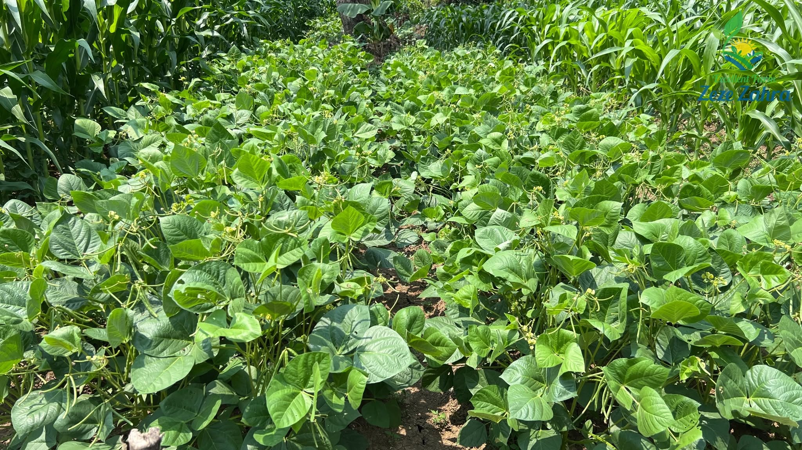
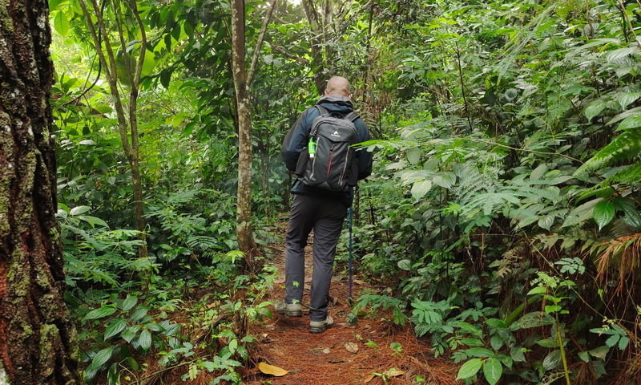

Destinasi Wisata Alam Kami
 Pertanian
Pertanian
Pertanian
Pertanian di Kampung Wisata Parakanceuri meliputi padi organik, kacang panjang, dan palawija. Wisatawan dapat belajar menanam, memanen, dan mengenal pertanian ramah lingkungan.
 Perkebunan Teh
Perkebunan Teh
Perkebunan Teh
Perkebunan teh di Parakanceuri menawarkan pemandangan hijau sekaligus sarana edukasi bagi wisatawan. Pengunjung dapat mempelajari jenis teh lokal dan proses pemetikan daun teh.

PalawijaPalawija
Tanaman palawija di Kampung Wisata Parakanceuri meliputi jagung, kacang-kacangan, dan umbi-umbian. Wisatawan dapat melihat proses budidaya sekaligus belajar tentang pentingnya diversifikasi pertanian bagi ketahanan pangan.
 Air Terjun
Air Terjun
Curug Cilamaya
Air terjun tersembunyi dengan aliran air yang jernih dan menyegarkan. Dikelilingi oleh pepohonan rindang, Curug Cilamaya adalah tempat yang sempurna untuk melepas penat dan bersantai bersama keluarga.

TrekkingTrekking & Jalur Hijau
Bagi Anda yang menyukai petualangan, kami menyediakan jalur trekking yang menyusuri perbukitan hijau dan area perkebunan warga. Nikmati pemandangan matahari terbit yang memukau dari titik-titik tertinggi kampung kami.
 Aliran Sungai
Aliran Sungai
Aliran Sungai
Keberadaan aliran sungai di kawasan desa dapat dimanfaatkan sebagai wisata alam berbasis relaksasi dan aktivitas outdoor. Suasana air yang jernih serta lingkungan sekitar yang masih alami mampu memberikan pengalaman healing bagi wisatawan.
 Berkemah
Berkemah
Area Berkemah (Camping Ground)
Habiskan malam di bawah taburan bintang. Area perkemahan kami aman, nyaman, dan dilengkapi dengan fasilitas dasar, memungkinkan Anda untuk menyatu dengan alam tanpa mengorbankan kenyamanan.
 Perbukitan
Perbukitan
Perbukitan Hijau
Wilayah perbukitan dengan panorama alam yang indah menjadi salah satu daya tarik utama desa wisata. Area ini berpotensi dijadikan tempat menikmati sunrise/sunset, camping, tracking ringan, maupun spot fotografi alam.